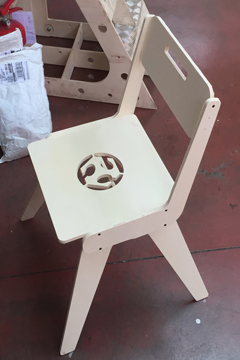

During this week we've learned about computer-controlled machining.
The assignment of this week module is to make something big. I started thinking about what to make, and I my wife suggested to me to build kid chairs for my twin kids of 2 years old since we have two chairs ugly and unstable.
Before start designing and further cutting materials, I had to consider the following variables:
-> Each student at the Fablab has available a single wood sheet of 210cm x 145cm x 1.2cm
-> The chair is for kids, so I want an assembly based on joints and screws in order to make it resistant and safe
-> I will use a 6mm bit
I started looking for a nice chair model to design, and after several options I decided to build a model called V-chair. At the beginning I found even the design file and measures of the various parts, but since my interest was for a kid chair with small dimensions, I redesigned it from scratch. Here is the inspiration original chair model:
And this is what I designed using Rhino:
And this is the 3D model of what the chair should be after CNC:
Step 2: : Preparing CNC file
At this step, from Rhino I exported the DXF file which it will be the base for CNC setup using vCarve Pro. This later allows to set low level CNC settings, and export the drawings into a file format ready for the ShopBot CNC controlling software.
I started by importing the DXF file in vCarve Pro and then setting job size and material thickness:
In order to avoid imprecision and problems during cutting, I did some job order setup in order to start working with logo engraving first, then internal cuts, then moving to external cuts. Therefore, here are the internal cuts settings Inside / Left as Machine Vectors:
And the following are external cuts settings Outside / Right as Machine Vectors:
Therefore, the job preview looks like:
Before launching the cut job, we need to used the ShobBot controlling software to reset X and Y axis and to calibrate Z axis:
Step 3: Chair CNC cutting and assembly
Here is the cutting process by the ShobBot:
And the assembly phase:

The Dxf file is available for downloand here: